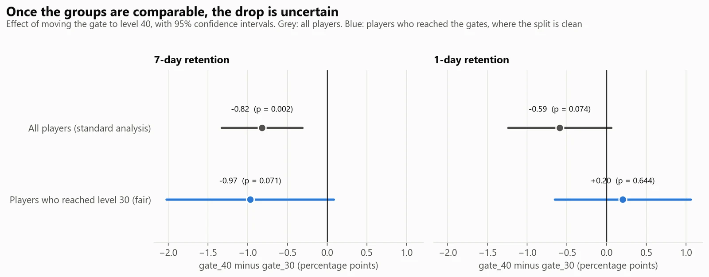
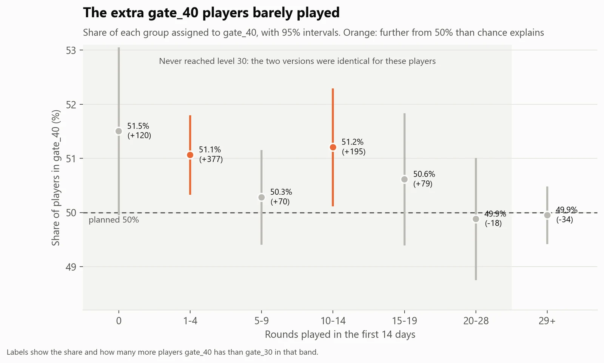
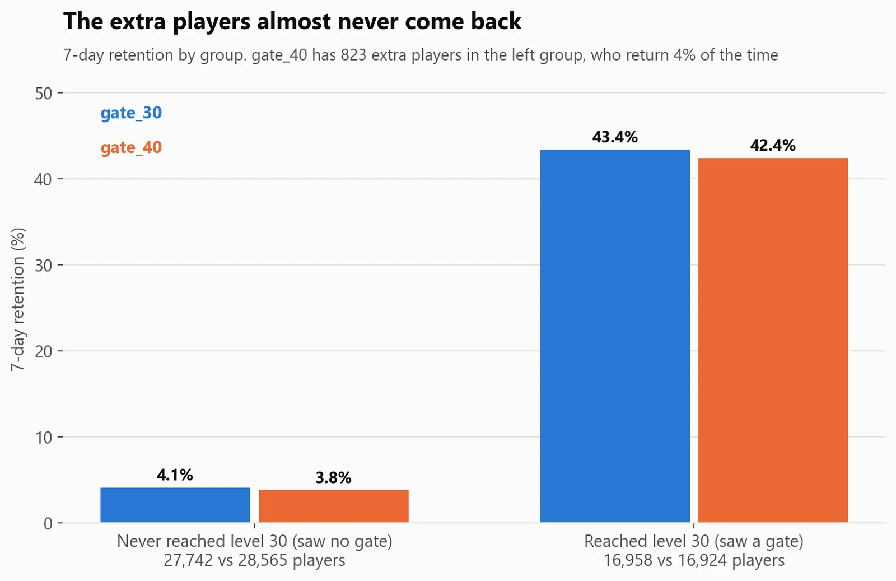
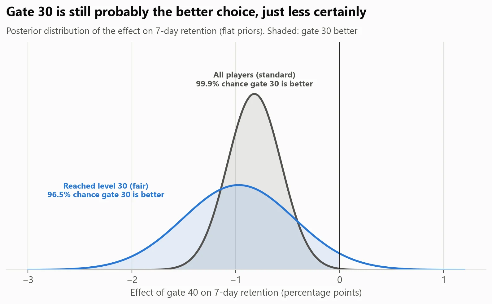
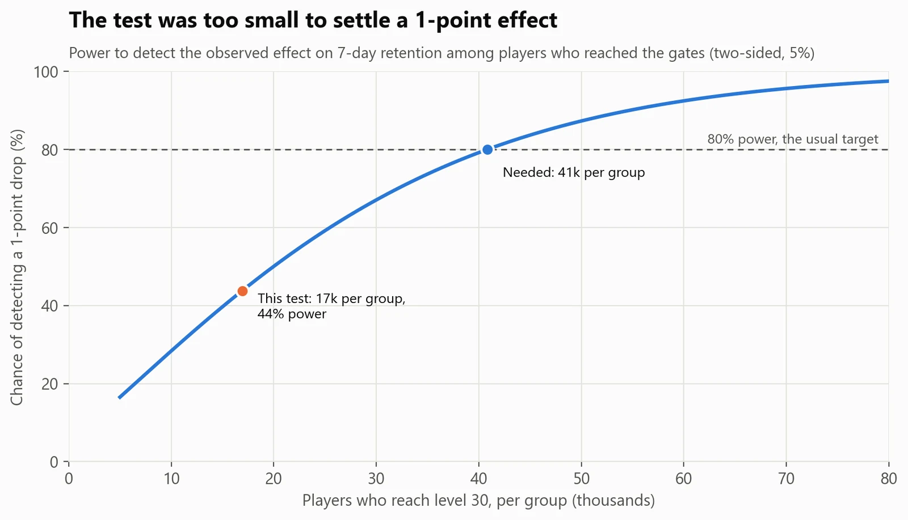

Experimentation · Mobile game
Cookie Cats: the broken split behind a famous A/B test
- Business question
- Should we move the game's first gate from level 30 to level 40?
- Key finding
- The test's random split was broken: one group got 823 extra players who barely played. Corrected, the later gate lowers 7-day retention by about 1 point among players who reach it, but the result isn't statistically clear.
- Recommendation
- Keep the gate at level 30, fix the assignment problem, and re-run with about 217,000 installs before making the change.
- Estimated impact
- 2.3×Overstatement of the harm to 7-day retention in the usual analysis (−0.82 vs −0.36 points), caused by the broken split.
- Data
- 90,189 players of Cookie Cats, randomly assigned to two versions
- Methods
- Sample-ratio check, A/A segment, z-tests, Bayesian analysis, power analysis
- Tools
- Python: scipy, statsmodels; SQL (DuckDB); unit tests
Results





How I did it
- Checked the experiment before the results: a sample-ratio test showed the groups were too uneven for chance (p = 0.009).
- Found where the extra players were by splitting players by whether they could have seen a gate (at least 29 rounds played). That split is decided before any gate, so it's a fair A/A test inside the A/B test.
- Re-estimated the effect only among players who reached the gates, where the split is clean, then scaled it to all players.
- Wrote a small statistics toolkit (sample-ratio test, z-test, Bayesian comparison, power, Holm correction) with 13 unit tests against scipy and statsmodels. The tests caught a missing factor of 2 in my first sample-size formula.
What could make this wrong
- There's no revenue data: gate 40 might earn more from players who pay to skip it.
- The cause of the broken split is unknown. The fix assumes it only affected players who never reached a gate, which the even split above level 30 supports.
- One game at one point in time.
What I learned
- Check the experiment before the results. A sample-ratio test takes seconds, and here it changed the answer.
- Splitting by something the treatment can't affect (players who never reached a gate) is a clean way to find where a test went wrong.
- A p-value of 0.07 isn't 'no effect'. For a product decision, the probability that one option is better (96% here) and the cost of being wrong are more useful.
What I'd do next
- Trace the extra players through install source, device, app version and the assignment logs.
- Add an automatic sample-ratio alert to the experiment dashboard, so a broken split is caught on day one.
- Re-run with about 41,000 players per group who reach level 30, with in-app revenue as a guardrail metric.
- Check whether the effect differs for players who reach the gate quickly or slowly.